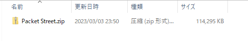
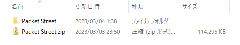
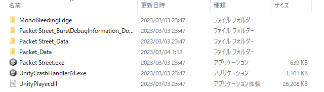
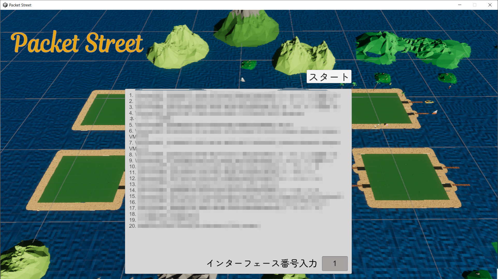
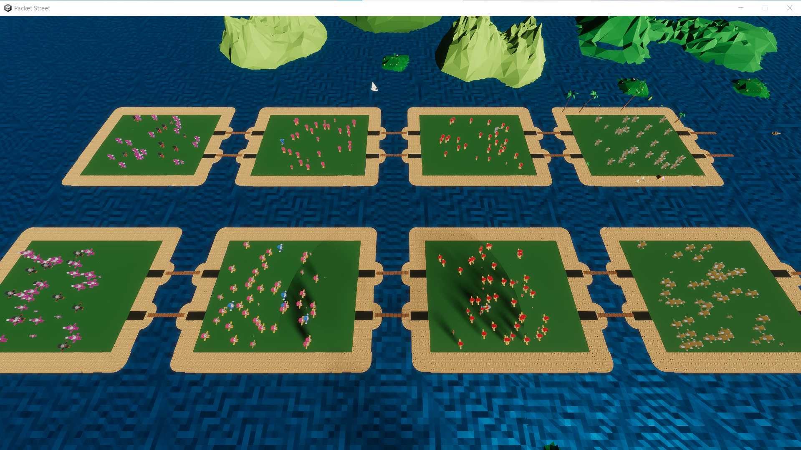
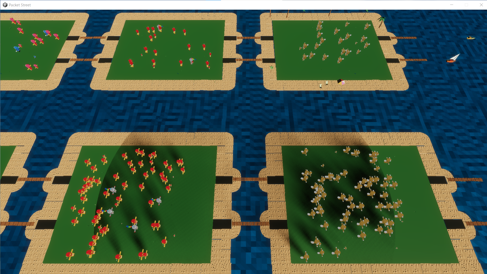
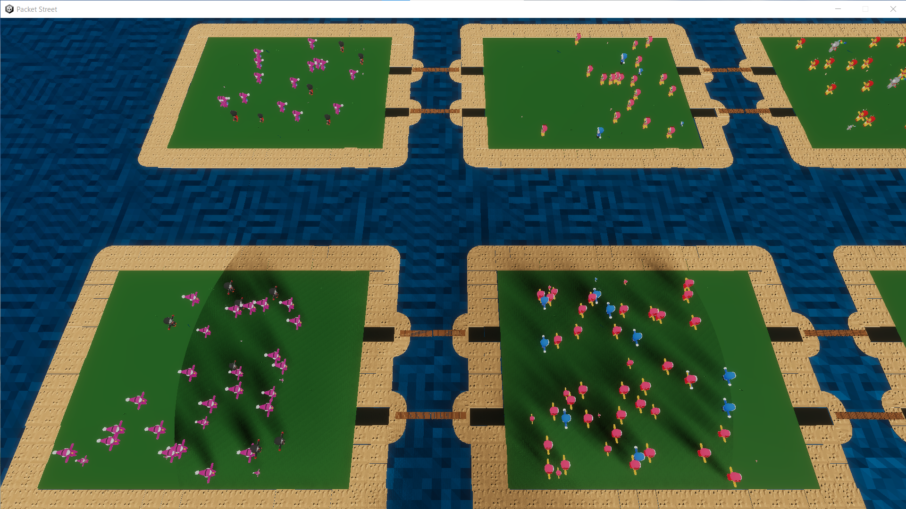
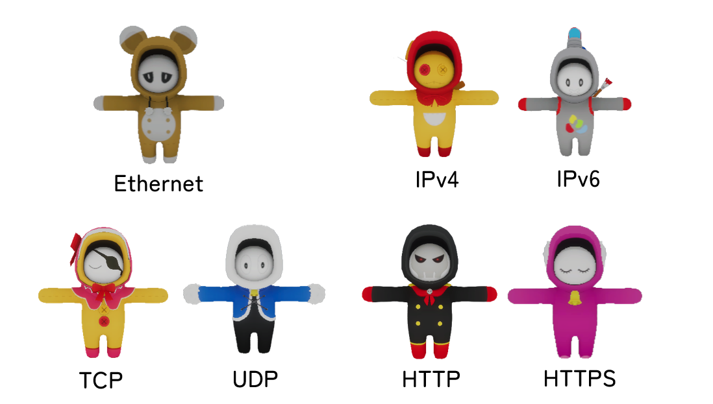
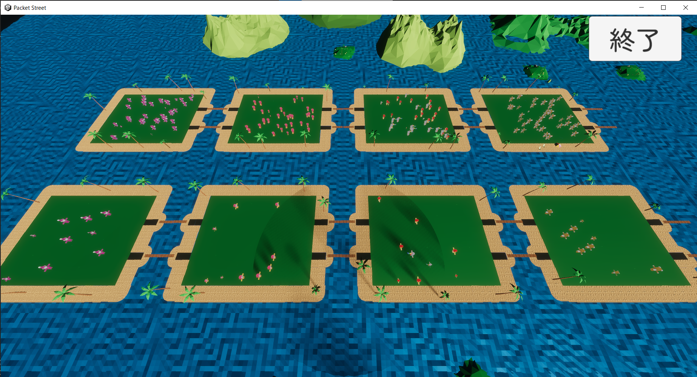

ダウンロードはこちらから
Packet Street.zip概要はこちらから
このツールはWindows専用です。
<注意>このツールを使用するためにはWiresharkをダウンロードをしてください。
① Packet Street.zip をダウンロード
② Packet Street.zipを展開
③ Packet Streetフォルダーの Packet Street.exe を起動
④ 見たいインターフェース番号を入力してスタートボタンをクリック
⑤ 島に自分の通信に合ったキャラクターが出現
スペースキーを押すと、画面切り替えが可能！
   ⑥ 終了したいときは右上の終了ボタンをクリック
<注意>終了する時にウィンドウの×印を押さないでください
